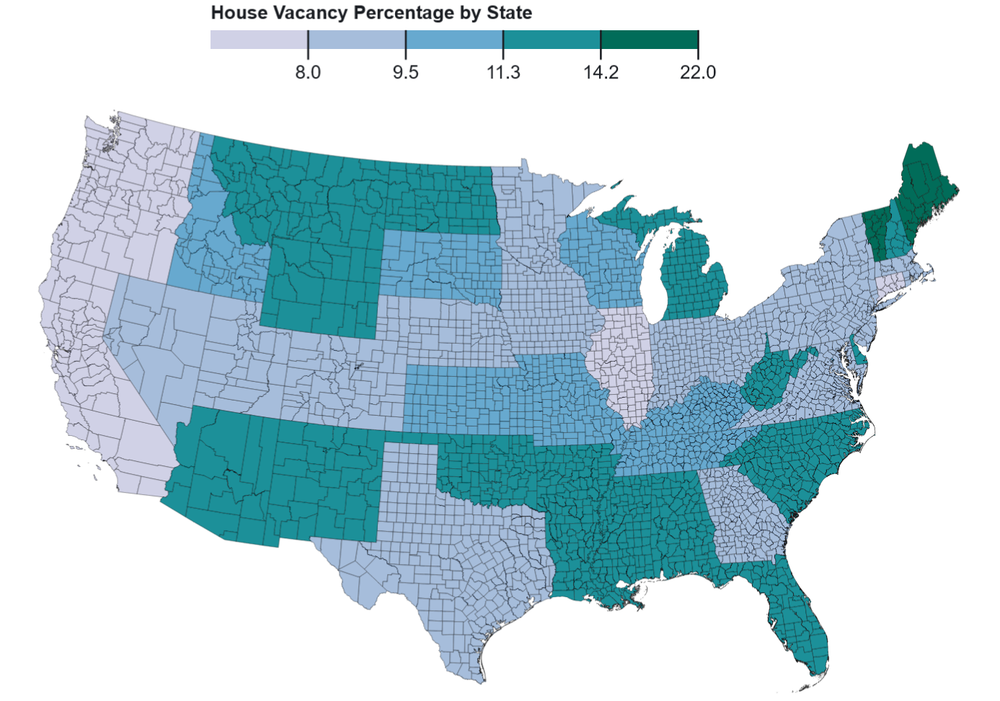
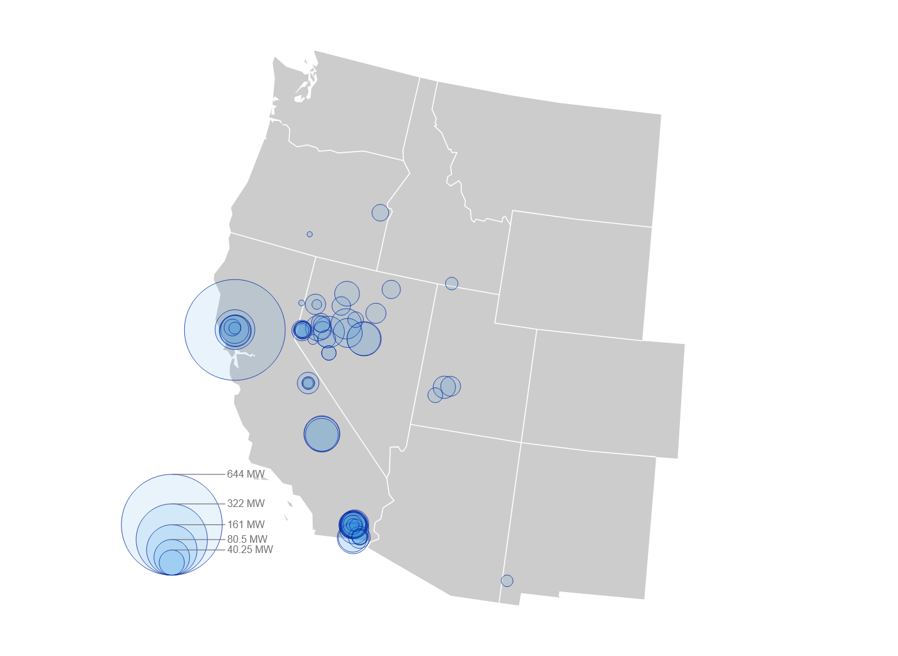
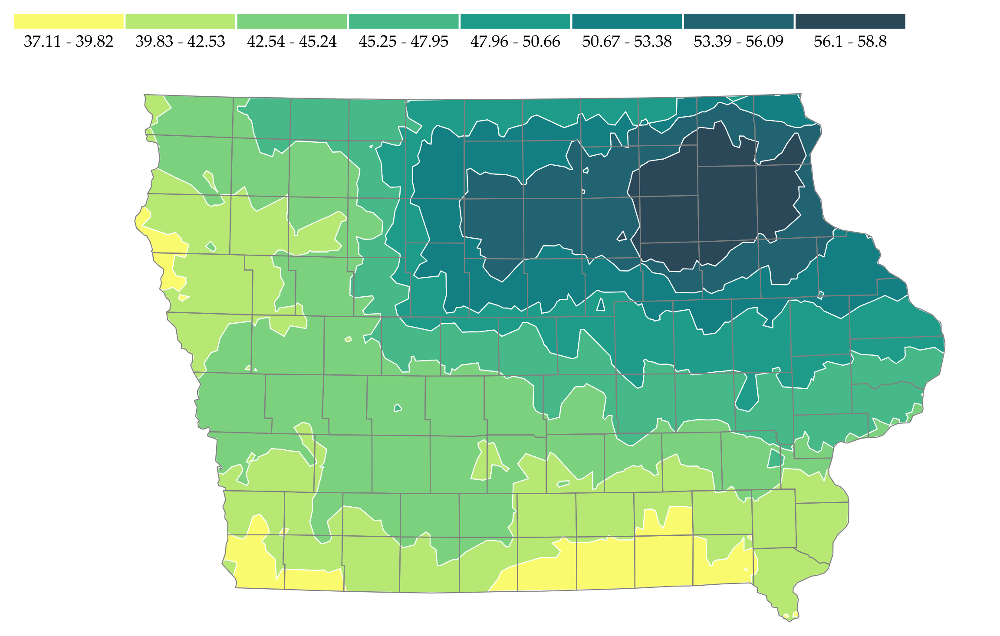
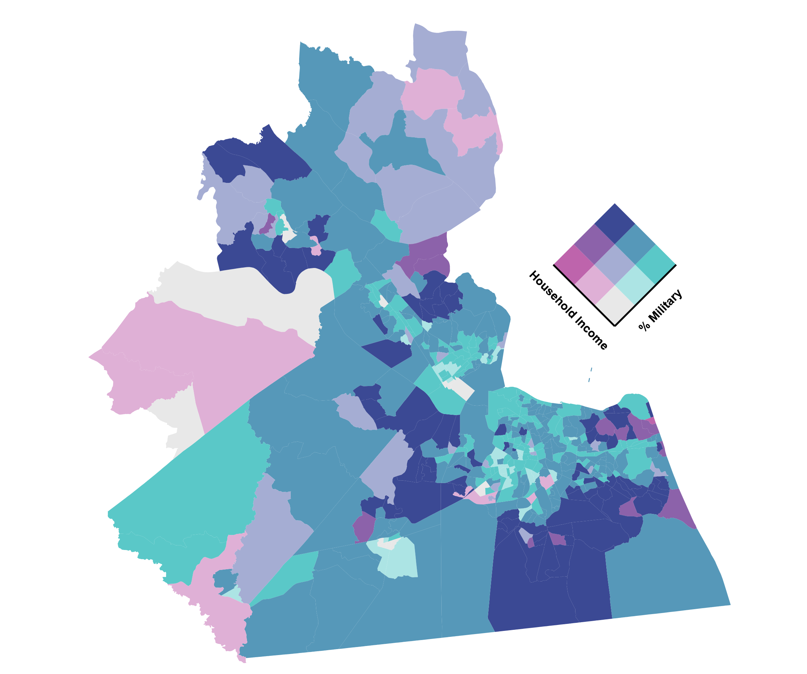

This is a basic choropleth map that represents house vacancy percentage by US state. It uses data from the 1990 US Census. It utilizes manual classification along with 5 classes.

This is a proportional symbol map focused on US geothermal power plant capacity in megawatts (MW). It utilizes data from the Energy Information Administration (EIA).

This is an isarithmic map that represents the yearly total precipitation of Iowa in inches. It was created by Caglar Koylu.

This is a bivariate choropleth map the represents median household income along with percentage of military service members by census tracts in eastern Virginia. It utilizes data from the US Census 2023 American Community Survey.